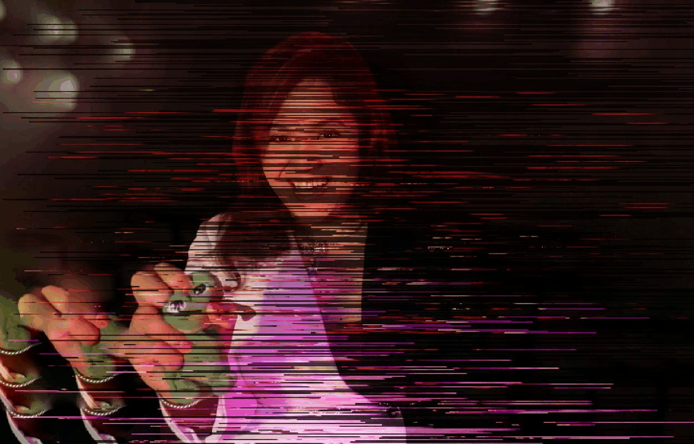

welcome to decentricity
who am i
i had a short official stint in ai research circa 2007–2008, then pivoted into blockchain consulting and crypto ventures. i still dabble in ai whenever i can—pushing code at odd hours, chasing that neon horizon. most of my career has been about building decentralized projects and finding fresh frontiers before the rest of the world arrives.
what i’ve made
first came the ai-based environmental impact system back when “ai” barely registered on the hype radar. then i co-founded blockchain consultancies, helped legalize crypto in indonesia, launched debio.network for privacy-focused biotech data, and myriad.social for free speech. i even set up a metaverse engine at realitychain and occasionally spin up new ai side projects—because once you’ve glimpsed the future, it’s hard to look away.
